Essa é a página de sobre, focada em explicar onde foram postas as competências propostas
OBSERVAÇÃO: Esses exemplos são pequenas partes do todo, para uma melhor visualização do projeto acessar código fonte...
UNIDADES
GRID
FLEXBOX
SASS
ANIMAÇÕES
MEDIA QUERY
1 - UNIDADES
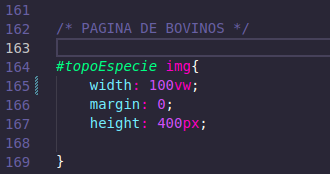
Imagem do trecho de código que exibe a unidade Vw (View Width)
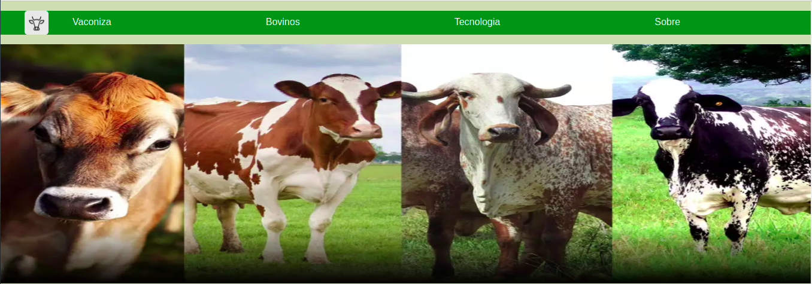
Local onde essa medida foi utilizada, abrangendo toda a largura de visão
2 - GRID
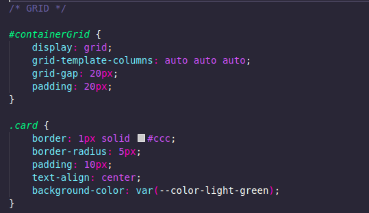
Trecho de código onde foi utilizado o conceito de grid, o "card" representa a celula da grid
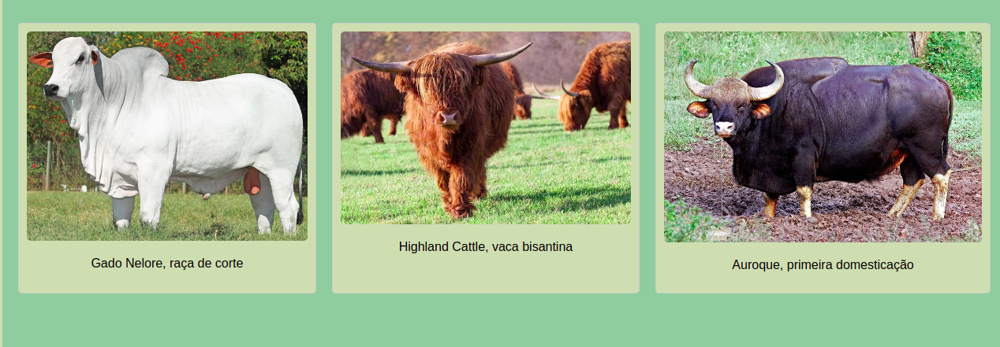
Pode-se notar que os cards estão devidamente seguindo uma grid...
3 - FLEXBOX
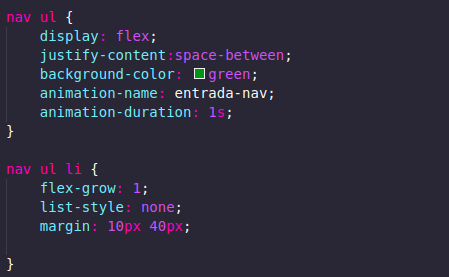
Utilização de display flex com a finalidade de fazer a NavBar
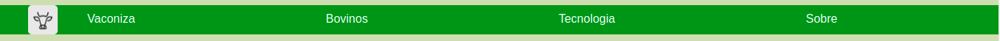
NavBar utlizando display Flex
4 - SASS
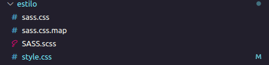
Parte do programa onde está o uso de sass. O arquivo "sass.css" é compilado apartir do "SASS.scss"
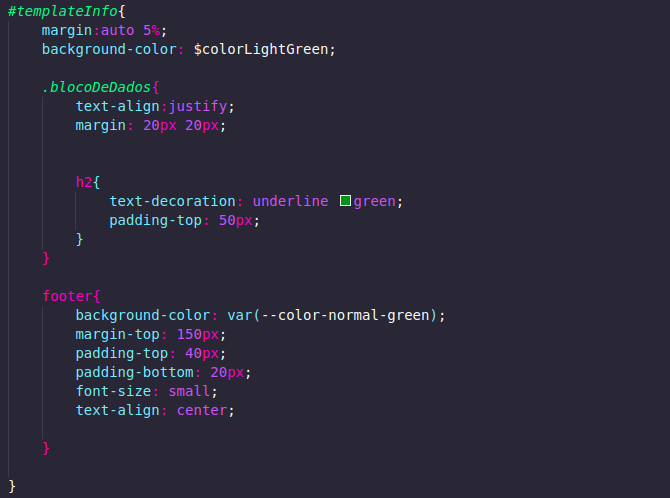
Trecho de código utilizando sass. Toda a página de "Tecnologia" foi feita utilizando SASS
5 - ANIMAÇÕES
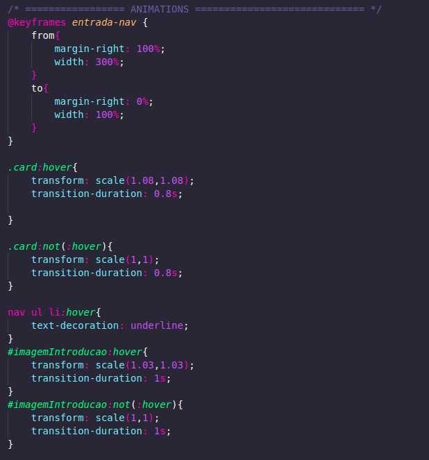
Nesse trecho de código é possível notar algumas animações compostas no site
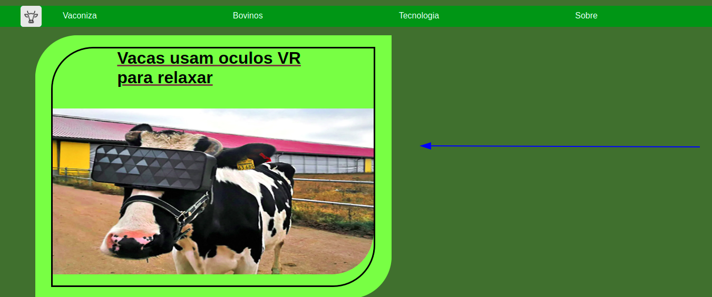
Ao acessar a aba de tecnologia, esse primeiro card se movimenta da direita para a esquerda
6 - MEDIA QUERY
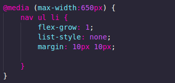
Trecho que utiliza media query para permitir o uso da NavBar mesmo com telas pequenas.
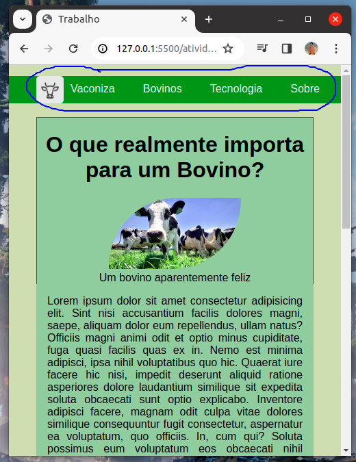
Observe que ao decorrer do código, se essa query não fosse feita, não seria possível visualizar o botão "Sobre". Logo a sua margin é reduzida para permitir o acesso.